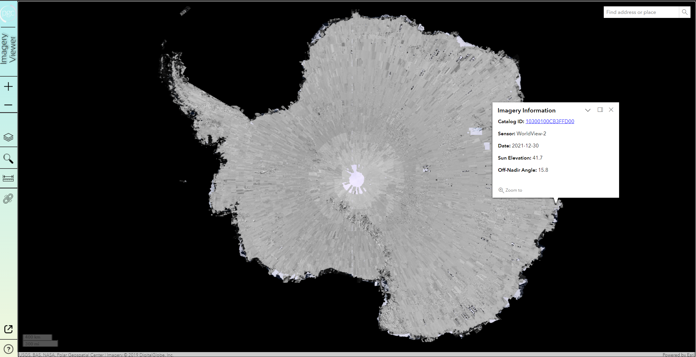
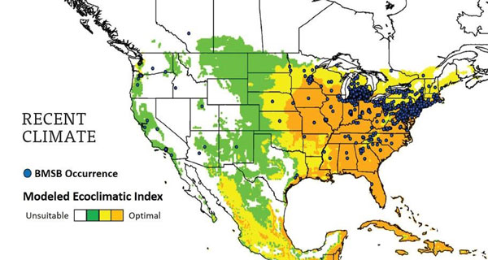
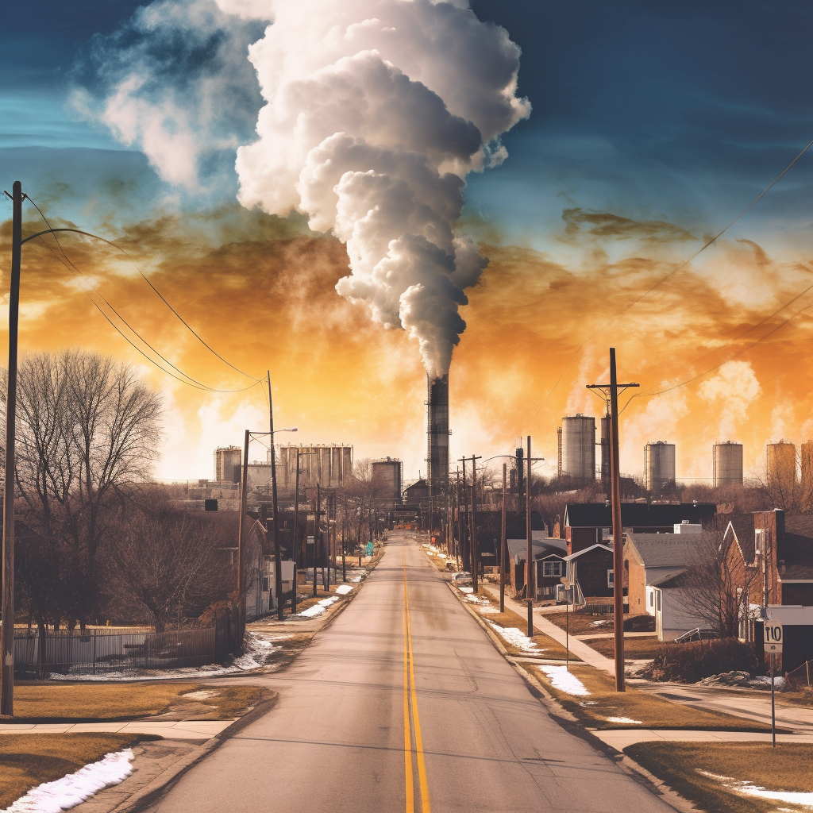
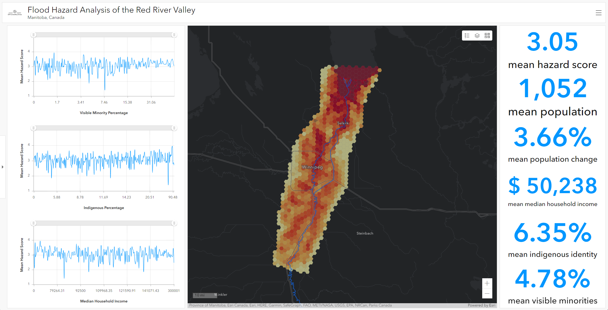
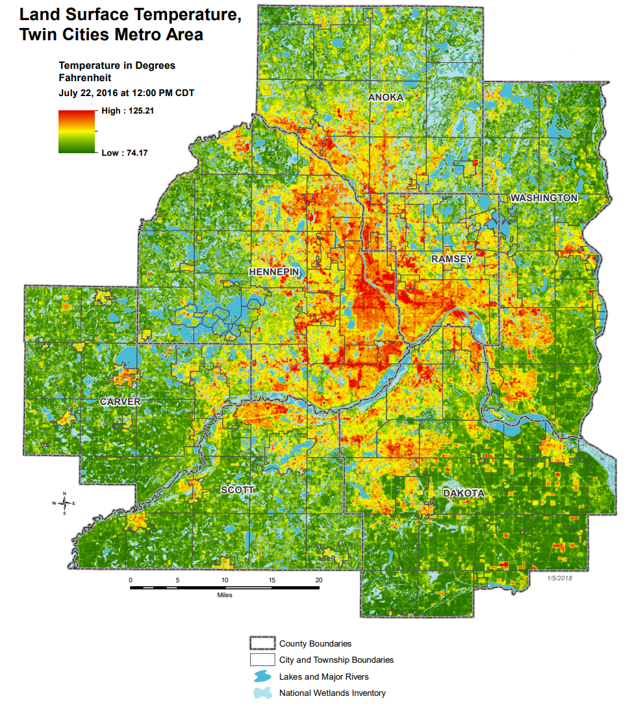
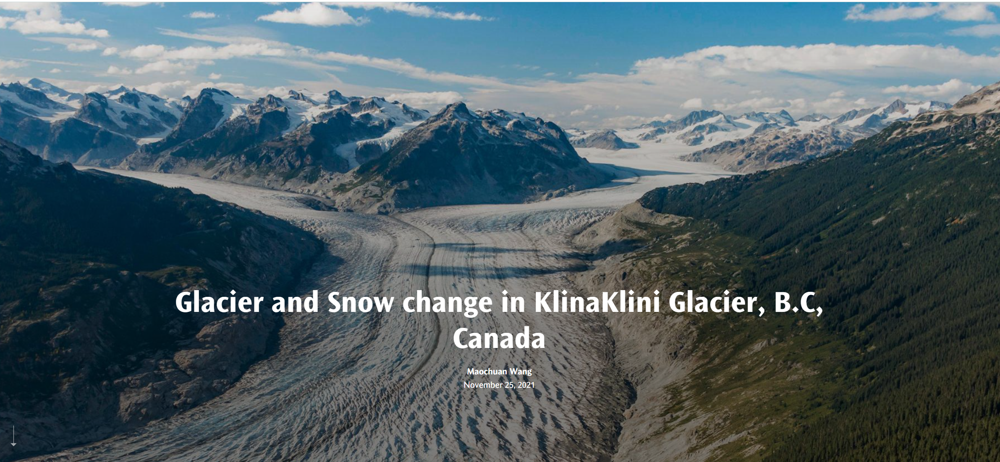

Projects
Explore the world at your fingertips with this immersive web-based application, seamlessly blending sophisticated geospatial data layers and interactive tools for an unparalleled journey across the globe.

Cartography
Design
Front-End Development
This project innovatively harnesses the power of geospatial models and cloud technologies to create a real-time, automated system for tracking and visualizing the spread of the invasive Brown marmorated stink bug across Minnesota.

Programming
Modeling
Automation
This groundbreaking project delves into the complex web of relationships between industrial facilities, demographics, and air quality in Minneapolis, shedding light on potential environmental justice issues and highlighting disparities in exposure to hazardous chemicals. By employing advanced geospatial analysis techniques, this study offers valuable insights for policymakers and community stakeholders, paving the way for targeted interventions and a more equitable distribution of environmental risks.

SQL
Project Development
Satellite Imagery
This project delves into the intricate dynamics of flood hazards in the Red River Valley, employing advanced geospatial analysis and multi-criteria decision analysis to assess and model the impacts of flooding. By unraveling the hidden patterns and vulnerabilities, it unveils invaluable insights for policymakers and communities to mitigate risks, protect lives, and build resilience in the face of nature's formidable forces.

Multi-Criteria Decision Analysis
Spatial Analysis
Hazard Assessment
Unlocking the Urban Heat Island Puzzle: Investigating the Relationship Between Urban Morphology and Temperature Variations in Minneapolis. This project employs cutting-edge geospatial analysis techniques to unravel the intricate interplay between urban design and the urban heat island effect, shedding light on effective strategies for mitigating heat-related challenges in urban environments.

Remote Sensing
Statistical Modeling
Geospatial Analysis
Utilizing remote sensing data and advanced geographic analysis tools, this study reveals the alarming retreat and mass loss of Canada's Klinaklini Glacier, offering invaluable insights into the broader impacts of global warming and the urgent need for mitigation strategies.

Remote Sensing
Project Development
Satellite Imagery